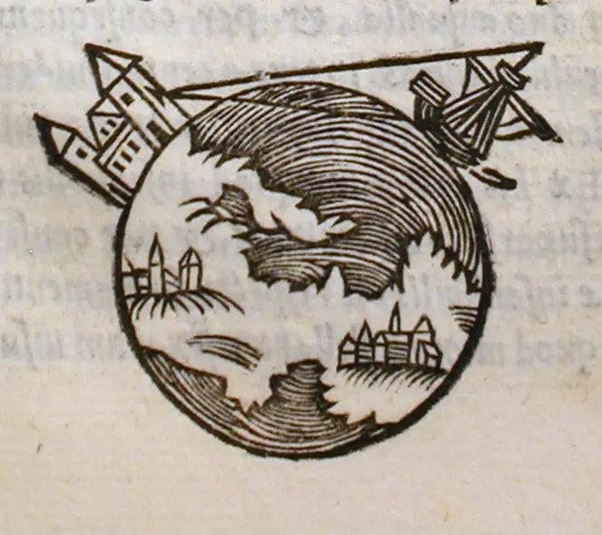
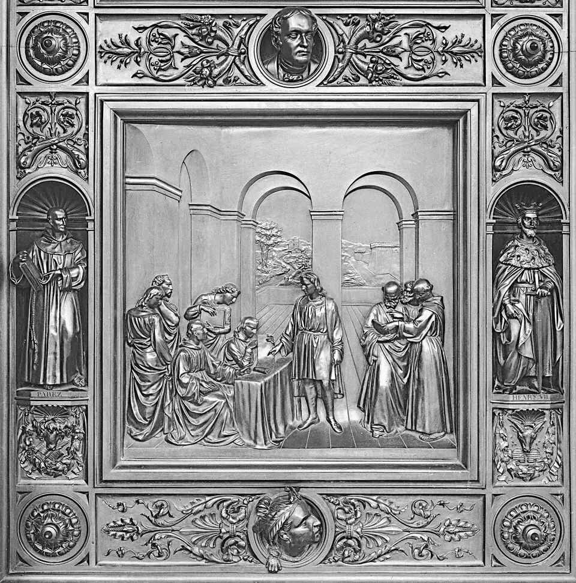
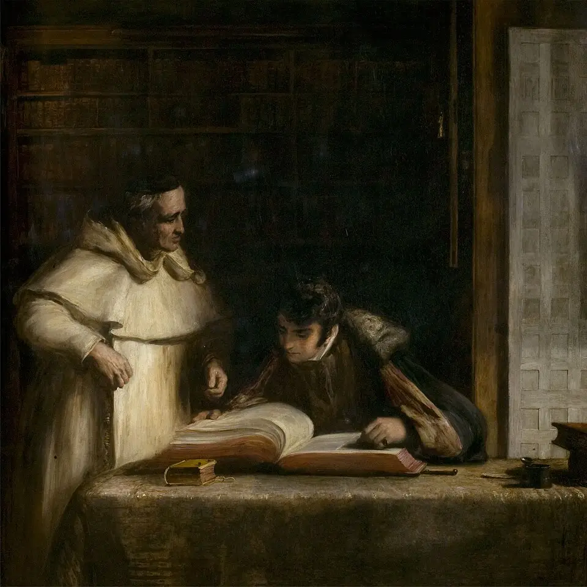
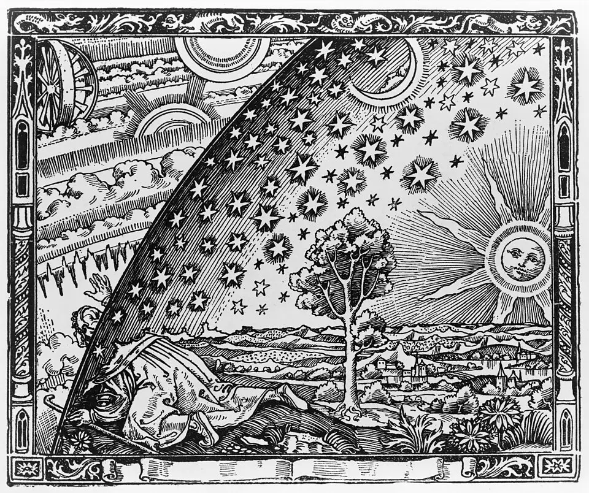

Người Trung Cổ không hề tin Trái Đất phẳng
Các học giả phản đối Columbus không phải vì họ nghĩ Trái Đất phẳng. Họ phản đối vì ông tính quãng đường tới châu Á ngắn đi gần bốn lần, và họ đúng.

Ngày 1/5/1486, Christopher Columbus trình bày trước nữ hoàng Isabella của Castile kế hoạch đi thuyền về phía tây để tới châu Á. Bà giao cho một hội đồng học giả xem xét. Hội đồng trả lời rằng Columbus đã tính quãng đường tới châu Á ngắn hơn thực tế rất nhiều. Hơn ba thế kỷ sau, một nhà văn Mỹ kể lại buổi họp ấy thành cuộc đối đầu giữa một người tin Trái Đất tròn và những giáo sĩ tin Trái Đất phẳng. Phiên bản thứ hai mới là phiên bản đi vào sách giáo khoa.
Stephen Jay Gould viết rằng chưa bao giờ có một thời kỳ "bóng tối Trái Đất phẳng" trong giới học giả.
Người xưa đã biết Trái Đất tròn
Ý niệm Trái Đất hình cầu đã được người Hy Lạp ghi lại rõ ràng từ thế kỷ 5 TCN. Khoảng năm 240 TCN, Eratosthenes, quản thủ Thư viện Alexandria, còn ước tính được chu vi của nó. Vào trưa ngày hạ chí, cây cọc ở Syene, nay là Aswan, không có bóng, còn ở Alexandria thì bóng nghiêng khoảng 7,2 độ, tức 1/50 vòng tròn. Ông lấy khoảng cách giữa hai thành, khoảng 5.000 stadia, nhân với 50, ra khoảng 250.000 stadia. Ông có hai giả định sai, nhưng hai cái sai bù trừ cho nhau.
Hiểu biết ấy không mất đi. Stephen Jay Gould viết rằng chưa bao giờ có một thời kỳ "bóng tối Trái Đất phẳng" trong giới học giả. Hai sử gia khoa học David Lindberg và Ronald Numbers nhận xét rằng hầu như không có học giả Kitô giáo thời Trung Cổ nào không thừa nhận Trái Đất hình cầu, và nhiều người còn biết gần đúng chu vi của nó. Đến thời Trung Cổ, hiểu biết ấy còn nằm ngay trong sách giáo khoa đại học.
Cuốn giáo trình thời Trung Cổ


Khoảng năm 1230, Johannes de Sacrobosco viết De sphaera mundi, một cuốn nhập môn thiên văn dựa trên Ptolemy. Sách được dạy ở các đại học châu Âu suốt nhiều thế kỷ, còn lại hàng trăm bản chép tay, được in lần đầu ở Ferrara năm 1472 và in lại ít nhất 84 lần trong hai trăm năm sau. Chữ "khối cầu" trong tên sách chỉ bầu trời, không phải Trái Đất. Nhưng ngay chương một, Sacrobosco đưa ra bằng chứng Trái Đất tròn: người ở phía đông thấy sao mọc sớm hơn và thấy nguyệt thực sớm hơn, còn người càng đi lên phía bắc càng thấy rõ những ngôi sao gần cực. Vậy năm 1492, người ta thật ra tranh cãi về điều gì?
Cuộc tranh cãi thật năm 1492


Vấn đề là kích thước. Phần lớn học giả theo Ptolemy, cho rằng lục địa Á Âu trải dài 180 độ kinh tuyến. Columbus chọn con số 225 độ của Marinus xứ Tyre, cộng thêm phần đất Marco Polo kể, rồi đặt Nhật Bản xa thêm về phía đông. Ông còn nhầm dặm Ả Rập, dài hơn khoảng 30%, với dặm Ý khoảng 1.480 m. Kết quả, ông tính chu vi Trái Đất nhỏ đi khoảng 25%.
Theo cách tính của Columbus, từ quần đảo Canary đi về phía tây đến Nhật Bản chỉ khoảng 2.400 hải lý, tức khoảng 4.400 km. Thực tế là khoảng 19.600 km. Khoảng năm 1484, các cố vấn của vua João II nước Bồ Đào Nha đã bác kế hoạch vì lý do ấy. Các học giả Tây Ban Nha cũng vậy. Ba con tàu của Columbus dài từ 20,5 đến 23,5 m, chở khoảng 90 người, không thể mang đủ nước và lương thực cho chuyến đi dài như thế. Khi tới vùng Caribe, thủy thủ đã gần chết đói. Họ sống sót nhờ một lục địa mà châu Âu chưa biết, nằm đúng chỗ Columbus tưởng là Nhật Bản. Thế thì câu chuyện về những giáo sĩ tin Trái Đất phẳng từ đâu ra?
Huyền thoại ra đời ở đâu


Năm 1828, nhà văn Washington Irving xuất bản cuốn tiểu sử A History of the Life and Voyages of Christopher Columbus, được nhiều người tưởng là sách nghiên cứu. Ở quyển II, chương IV, Irving dựng lại buổi họp của hội đồng, trong đó vài thành viên dẫn Kinh Thánh để bác bỏ việc Trái Đất tròn. Wikipedia gọi đây là một chi tiết thêm thắt khó có thật. Cuốn sách là tiểu sử Columbus được đọc nhiều nhất trong thế giới nói tiếng Anh cho đến năm 1942.
Sau Irving, Antoine-Jean Letronne ở Pháp năm 1834 và William Whewell ở Anh năm 1837 tiếp tục gán niềm tin Trái Đất phẳng cho các giáo phụ. Hai cuốn sách của John William Draper (1874) và Andrew Dickson White (1896) phổ biến nó trong khuôn khổ cuộc tranh luận khoa học và tôn giáo. Sử gia Jeffrey Burton Russell cho rằng huyền thoại này thịnh nhất trong khoảng 1870 đến 1920. Huyền thoại ấy còn có cả một bức tranh minh họa.
Bức tranh khắc "thời Trung Cổ"
Hình ảnh hay đi kèm huyền thoại này là bức tranh khắc một người thò đầu qua vòm trời để nhìn ra ngoài. Nó được in lần đầu trong sách L'Atmosphère của Camille Flammarion, xuất bản ở Paris năm 1888, trang 163. Bản gốc có đường viền trang trí cho thấy rõ đây là tác phẩm thế kỷ 19. Trong các lần in sau, đường viền bị cắt đi và có người ghi rằng tranh từ thế kỷ 16. Năm 1983, sử gia Daniel Boorstin còn dùng nó làm bìa sách The Discoverers.
Huyền thoại vẫn sống. Một khảo sát năm 2009 cho thấy nó có mặt trong phần lớn sách giáo khoa lịch sử ở Áo và Đức. Columbus nghĩ về hình dạng Trái Đất giống mọi người có học cùng thời; ông chỉ sai về kích thước của nó, và gặp may vì có một lục địa nằm chắn giữa đường.